Generacija 2017/2026 | Naša priča u bojama
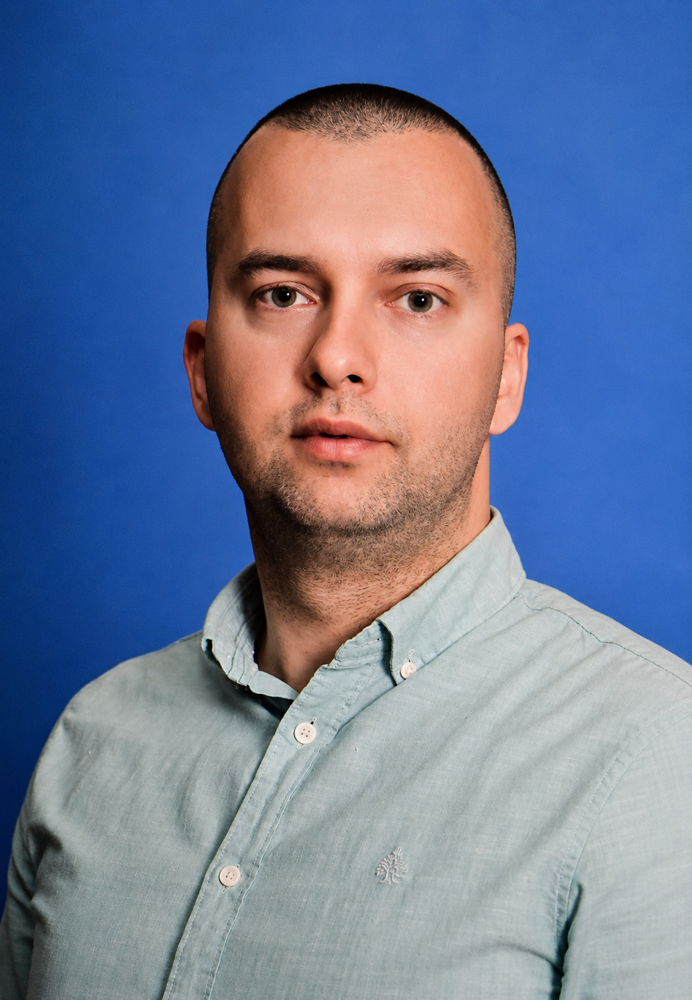
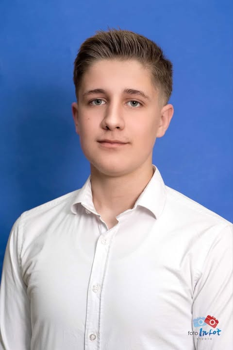
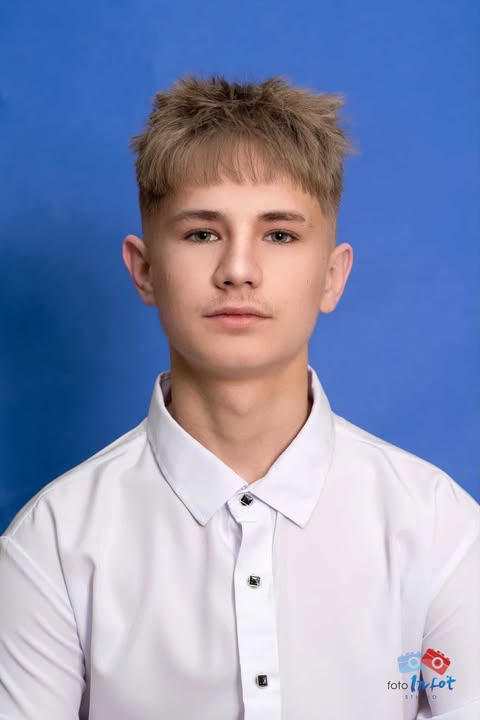
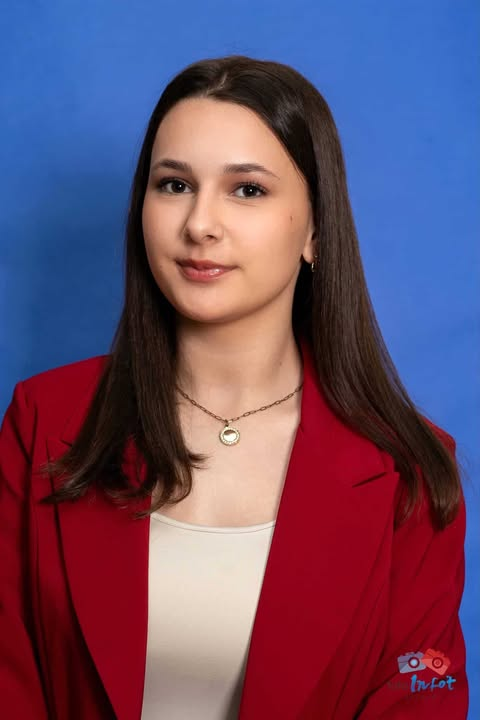
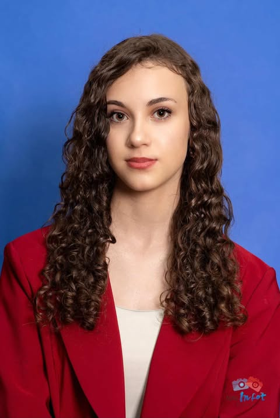
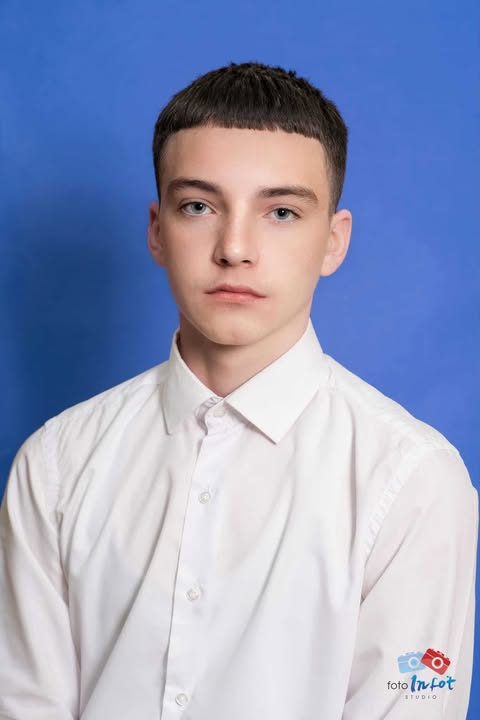
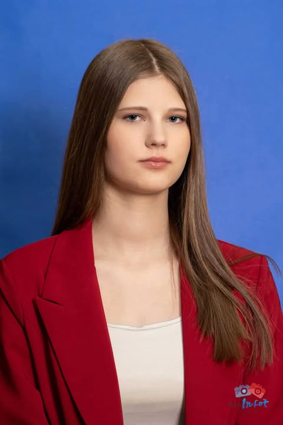
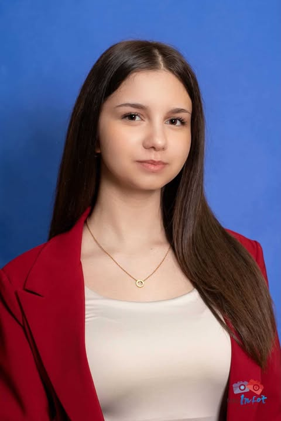
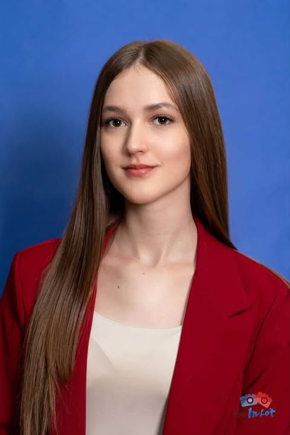
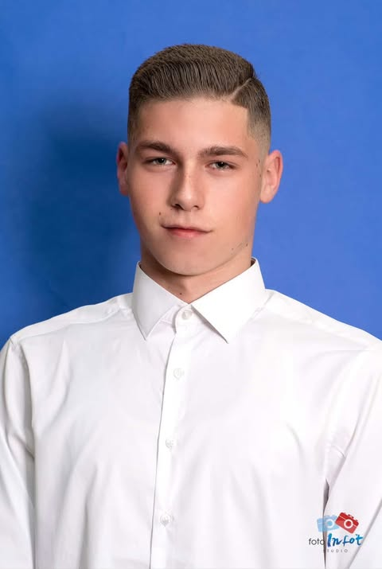
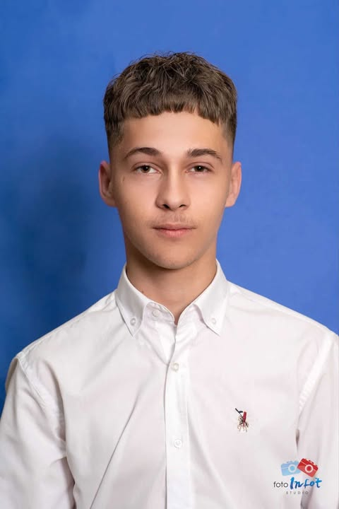
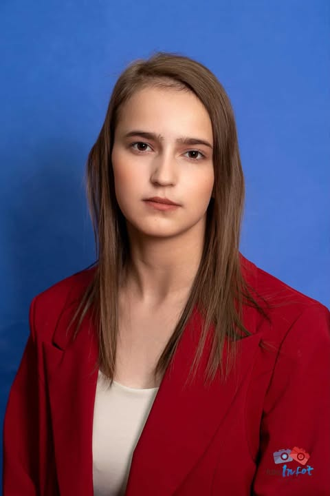
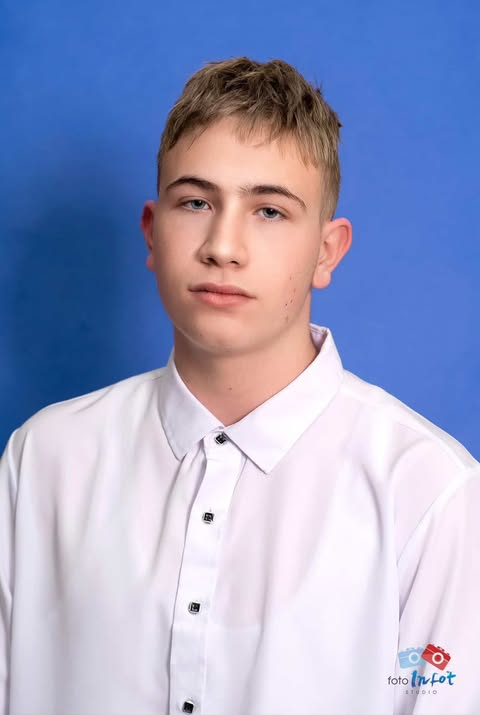
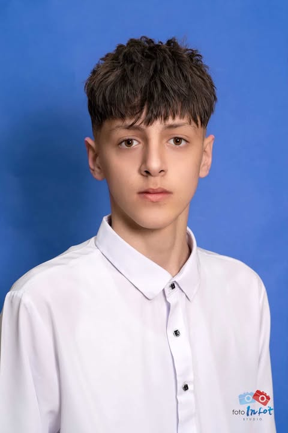
MAGISTAR & PROFESOR HISTORIJE
Obrazovanje
UNSA - Filozofski fakultet
Staž u OŠ Dolac
Od 2018. godine
Kada historiju predaje neko ko je magistrirao na toj oblasti, časovi postaju više od datuma na papiru. Kenan Hadžić je u proteklih 10 godina rada u prosvjeti postao sinonim za autoritet koji se poštuje, ali i za podršku koja nam je svima trebala.
Njegova uloga u našem odjeljenju nije bila samo "dnevnik i ocjene". On je bio onaj koji je balansirao naš temperament, učio nas kako da budemo ljudi i kako da svaku grešku pretvorimo u lekciju. Za njega, mi nismo samo broj u katalogu, već ekipa koju je vodio kroz najburnije školske dane.
"Ko prestane učiti, star je, imao 20 ili 80 godina, a ko nastavi učiti, ostaje mlad."
— Henry Ford
Hvala Vam razredni što ste našu historiju učinili nezaboravnom!
Put ka budućnosti: Nakon devet godina u našoj školi, svoj put nastavljam u Medresi. Vjera, znanje i disciplina su temelji na kojima želim graditi svoju budućnost.
Sport i disciplina: Dugogodišnji sam džudista sa ponosno zarađenim zelenim pojasom. Judo me naučio da nije bitno koliko puta padneš, već koliko puta ustaneš – jači nego prije.
Uspomena na razred: Iz OŠ "Dolac" sa sobom nosim ono najvrjednije – našu raju. Uvijek sam se trudio biti onaj prijatelj na kojeg se ekipa može osloniti u svakom trenutku.
"Pravi borac se ne prepoznaje po snazi mišića, već po snazi karaktera i odanosti svojim prijateljima."
Digitalna budućnost: Moj plan je upisati smjer Informatički tehničar. Tehnologija me privlači, a cilj mi je da spojim svoje vještine sa modernim svijetom IT-a.
Duh i energija: U školi sam poznat kao onaj koji nema dana a da nekoga ne nasmije. Moje "sprdanje" sa nastavnicima i opušten pristup su legendarni, jer smatram da škola ne smije biti dosadna.
Hobiji i strasti: Kad nisam u školi, naći ćete me za bilijarskim stolom ili na stadionu. Veliki sam navijač NK Travnik i ponosni dio Gerile – srce ostavljam na tribinama!
Karakter: Iako me nekad smatraju "problematičnim", oni koji me znaju kažu da sam predobar lik. Volim dobro društvo, poštujem ekipu i uživam u svakom trenutku mladosti.
"Život je igra – nekad je bilijar, nekad je tribina, ali najbitnije je da se uvijek igra srcem!"
Kreativni put: Moja strast su stil i estetika, pa je logičan korak upis u Frizersku školu. Volim raditi rukama i stvarati nešto lijepo, a radujem se novim izazovima koje donosi zanat.
U srcu razreda: Uvijek sam bila tu za druženje sa svima. Za mene škola nije bila samo učenje, već smijeh i razgovor sa ekipom. Slobodno vrijeme najradije provodim u opuštenim šetnjama, puneći baterije za nove školske dane.
Uspomena koja ostaje: Ono što ću zauvijek čuvati u sjećanju je naše zajedničko odrastanje. Od malih nogu pa do danas, bili ste moja druga porodica.
Uspjeh: Sa dobrim/vrlo dobrim uspjehom i uzornim vladanjem, spremna sam za nove pobjede!
"Ljepota počinje onog trenutka kada odlučiš biti svoja – i uvijek okružena pravim prijateljima."
Budući heroj u bijelom: Moj veliki plan i cilj je da upišem Medicinsku školu. Želim pomagati ljudima i učiti o onome što je najvažnije – zdravlju i životu.
Pobjednički duh: Teren je moje drugo mjesto stanovanja. Treniram odbojku u klubu "Victory", gdje svakodnevno nižemo rezultate i učimo šta znači borba do zadnjeg poena.
Svestranost u školi: Pored sporta, aktivna sam i u školskim klupama. Ponosna sam na učešća na takmičenjima iz engleskog jezika i tjelesnog odgoja, kao i na brojna druga školska takmičenja na kojima sam predstavljala naš razred.
Oslonac razreda: Uvijek sam tu da pomognem svima u nevolji. Vjerujem da je prava snaga u tome da podigneš druge kada im je najteže, bilo na terenu ili u učionici.
"Kao na odbojkaškom terenu, tako i u životu: tim je jak onoliko koliko smo spremni pomoći jedni drugima."
Budući IT stručnjak: Moje ambicije su se usmjerile ka digitalnom svijetu. Planiram upisati Ekonomsku školu, smjer Poslovno-informatički tehničar, jer vjerujem da je spoj informatike i ekonomije posao budućnosti.
Novi interesi: Odustala sam od gimnazije jer želim konkretno znanje koje mogu odmah primijeniti. Zanimaju me moderne tehnologije i način na koji one pokreću današnji biznis.
Karakter i društvo: Sebe bih opisala kao osobu koja uvijek teži ka nečem novom i boljem. Volim provoditi vrijeme sa ekipom iz razreda i graditi uspomene koje će trajati i nakon što završimo osnovnu školu.
Školski put: Devet godina u OŠ "Dolac na Lašvi" završavam ponosna na stečeno znanje i spremna da se okušam u svijetu informatike i poslovne administracije.
"Dok drugi prate trendove, ja planiram kako da ih kreiram. Svoj put počinjem u svijetu digitalnih tehnologija."
Obrazovni put: Moj plan je upisati Ekonomsku školu, smjer Poslovno-informatički tehničar. To vidim kao odličnu osnovu za daljnje usavršavanje i razvoj karijere.
Cilj u karijeri: Nakon završene srednje škole, moja velika želja je zaposlenje u Sudskoj policiji. Težim poslu koji zahtijeva odgovornost, disciplinu i poštivanje zakona.
Slobodno vrijeme: U slobodnim trenucima uživam u vožnji romobila i kvalitetnom druženju sa prijateljima. Sebe bih opisao kao finu i korektnu osobu koja cijeni dobre odnose u kolektivu.
"U životu je bitno imati dobru strategiju – bilo u igrici, bilo u školi."
Budući medicinski tehničar: Moj primarni cilj je upis u Medicinsku školu. Oduvijek me privlačila biologija i želja da pomažem onima kojima je to najpotrebnije.
Ljubav prema životinjama: Veliki sam ljubitelj životinja i smatram da se kroz brigu o njima razvija empatija i odgovornost. Slobodno vrijeme najradije provodim vani, u dugim šetnjama prirodom koje me opuštaju.
Osobnost i druženje: U školi važim za tihu, mirnu i povučenu osobu, ali u krugu prijatelja sam sasvim opuštena. Iz osnovne škole nosim lijepe uspomene na odmore i zajedničke ekskurzije.
"Dobrota se ne ogleda u riječima, već u djelima i pažnji koju poklanjamo onima oko nas."
Put ka ekonomiji: Moje ambicije su vezane za ekonomiju, te planiram upisati Ekonomsku školu. Smatram da je to odlična podloga za biznis i stabilnu karijeru.
Kreativnost i hobi: Pored škole, moja velika strast je crtanje. Volim prenositi svoje ideje na papir i tako izražavati svoju kreativnu stranu. Također, uživam u muzici i šetnjama.
Uspjeh i društvo: Kroz cijelu osnovnu školu prolazim sa odličnim uspjehom i primjernim vladanjem. Sebe smatram komunikativnom i društvenom osobom koja je uvijek tu za dobar razgovor i podršku.
"Kreativnost nam omogućava da vidimo svijet iz drugačije perspektive, a znanje da taj svijet mijenjamo."
U svijetu finansija: Moj izbor za nastavak školovanja je Ekonomska škola. Želim steći znanja o ekonomskom sistemu, menadžmentu i poslovnoj organizaciji.
Slobodne aktivnosti: Slobodno vrijeme ispunjavam aktivnostima koje me ispunjavaju – slušanjem muzike i opuštajućim šetnjama sa prijateljima. Volim balans između školskih obaveza i slobodnog vremena.
Uspjeh i karakter: Baš kao i moja sestra, osnovnu školu završavam sa odličnim uspjehom i uzornim vladanjem. Opisala bih se kao komunikativna, pouzdana i društvena djevojka.
"Uspjeh ne dolazi sam od sebe, on je rezultat truda, discipline i jasnih ciljeva koje postavimo ispred sebe."
Mašinska struka: Moj plan za budućnost je upis u Mješovitu srednju školu za smjer Mašinski tehničar. Volim tehničke nauke i rad sa nacrtima i mašinama.
Fudbal i tribina: Sport je ogroman dio mog života. Aktivno treniram fudbal u NK "Nova Bila", a vikendom sam na stadionu. Strastveni sam navijač NK Travnik i član navijačke grupe Gerila.
Učionica i ekipa: U razredu sam poznat kao opušten lik, uvijek spreman za šalu, a nerijetko dobijem i opomenu zbog pričanja na času – ali sve je to dio školske atmosfere.
"I na terenu i na tribini, najvažnije je ostati odan svom timu i boriti se do posljednjeg zvižduka."
Kulinarski putevi: Moj cilj je da upišem smjer Kuhar. Kuhanje smatram umjetnošću i želim naučiti sve tajne profesionalne gastronomije.
Tehnički hobiji: U slobodno vrijeme bavim se 3D modeliranjem i dizajnom, što mi pruža prostor za kreativno izražavanje u digitalnom svijetu. Također, volim igrati video igre.
Društveni život: Sebe bih opisao kao druželjubivu osobu koja uživa u izlascima i vremenu provedenom sa rajom iz razreda. Osnovnu školu ću pamtiti po zajedničkim smicalicama i dobrom druženju.
"Dobro jelo, baš kao i dobro prijateljstvo, zahtijeva prave sastojke, strpljenje i mnogo truda."
Pravni sistem: Moja želja za nastavak obrazovanja je upis u Ekonomsku školu, smjer Pravni tehničar. Privlače me zakoni, administracija i borba za pravdu.
Aktivnosti i hobiji: Slobodno vrijeme koristim za slušanje muzike, šetnje i kvalitetne razgovore sa prijateljima. Volim organizovanost kako u učenju, tako i u svakodnevnom životu.
Školski uspjeh: Devet godina obrazovanja u OŠ "Dolac na Lašvi" krunišem odličnim uspjehom i primjernim vladanjem kroz sve razrede.
"Pravda i znanje su jedine stvari koje niko ne može oduzeti čovjeku. Spremna sam za nove pravne izazove."
Ugostiteljstvo: Planiram upisati smjer Konobar. Smatram da je to dinamičan posao koji nudi mogućnost rada sa ljudima i stalnu komunikaciju.
Slobodno vrijeme: Veliki sam ljubitelj video igara i to je moj glavni način opuštanja nakon škole. Pored toga, volim provoditi vrijeme vani sa svojom ekipom iz naselja.
Razredna raja: Sebe vidim kao jednostavnog i prilagodljivog momka. Iz škole nosim uspomene na bježanje sa časova, zezanciju pod odmorima i prijatelje za cijeli život.
"Život je prekratak da bismo ga provodili u brizi – treba iskoristiti svaki trenutak za dobar smijeh sa ekipom."
Moderna proizvodnja: Moj plan je da postanem CNC operater. Fascinira me spoj moderne tehnologije i mašinstva, i želim naučiti kako se od digitalnog nacrta stvara gotov proizvod.
Gaming i slobodno vrijeme: Veliki sam ljubitelj video igara. Gaming mi je omiljeni način opuštanja, ali i treniranja fokusa koji će mi sigurno trebati u budućem poslu.
Karakter i društvo: Sebe bih opisao kao veoma društvenu osobu. Ono što me izdvaja je to što se, za razliku od mnogih, uvijek uspijem izvući iz problema – znam kad treba stati, a kad se našaliti. Ekipa me cijeni kao kvalitetnog i pouzdanog prijatelja.
Školski put: Devet godina u OŠ "Dolac na Lašvi" završavam kao vrlodobar učenik. Ponosan sam na sve uspomene, a posebno na ekipu s kojom sam proveo svaki veliki odmor.
"U životu je bitno imati dobru strategiju – bilo u igrici, bilo u školi."
Mali podsjetnik na sve ono što nas čini jedinstvenim iz školskih klupa.
Ukupno nas ima 14 u odjeljenju. Imamo buduće programere, ljekare, sportiste, zanatlije, pa čak i vozače kamiona. Spremni da osvojimo svijet!
Istorija pamti i prepričava trenutak kada je Amer razbio prozor učionice! Ta scena je zvanično upisana u legende OŠ "Dolac na Lašvi" i ostaje priča za sva vremena.
Između časova vlada haos: prepisivanje zadaće u zadnjih 5 minuta brzinom svjetlosti, Nevzudinove legendarne baze sa nastavnicima, Jasminin prelijep glas i Elminov smijeh do suza.
"Iza nas ostaju prazne klupe! Generacija 2017-2026. Najjača ekipa OŠ 'Dolac na Lašvi' odlazi u stilu!"
Zakon broj 1: Ako nastavnik pita jedno, a niko ne zna odgovor, čitav razred odjednom počinje glasno da kašlje ili glumi da traži olovku po torbi kako bi se kupilo vrijeme. Solidarnost iznad svega!
OGBrojavamo zadnje dane u klupama. Knjige polako zatvaramo, ocjene peglamo, a spremamo odijela i haljine za najluđu noć i naš zvanični oproštaj.
Pogledajte naš zajednički video, najljepše uspomene i trenutke koje smo zabilježili tokom našeg devetogodišnjeg školovanja.